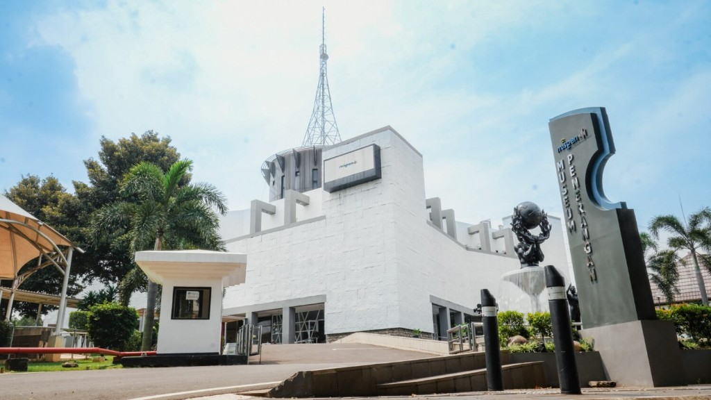

Kenangan magang, versi digital
Hai, ini album kecil magang kami di Museum Penerangan
Kami simpan foto-foto dan cerita pendek supaya momen belajar, ketawa bareng, dan kerja sama tim tetap kebaca — kayak buku tahunan, cuma dalam bentuk situs yang (mudah-mudahan) hangat.
Sedikit tentang magang di sini
Di Museum Penerangan, magang itu kesempatan nyemplung ke dunia museum — dokumentasi, komunikasi, dan hal-hal di balik layar — plus biasanya pulang bawa cerita dan teman baru.
Di situs ini kami kumpulkan foto dan kutipan singkat dari teman-teman magang, buat staf, alumni, atau siapa pun yang penasaran sama suasana magang dari tahun ke tahun.
Cuplikan galeri bareng
Enam foto diacak tiap kali halaman dimuat — klik untuk buka halaman galeri penuh.